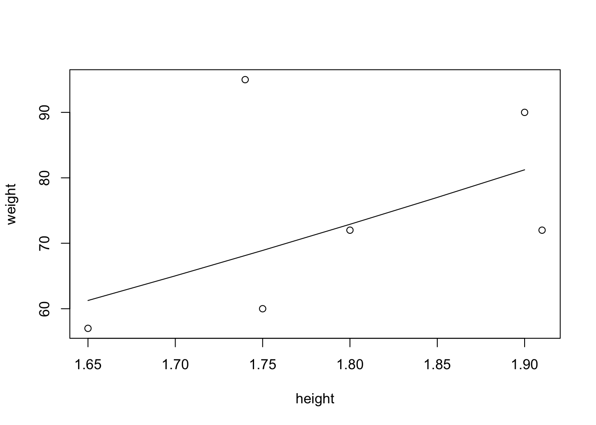

Curso de R
Introducción
Instalación de R
Para utilizar R es necesario instalarlo en tu máquina. Para ello sigue las instrucciones en https://cran.r-project.org/.
Para facilitar la programación en R, es necesario descargar otro software que asista como interfaz de usuario, creando un ambiente integrado de desarrollo (o IDE por sus siglas en inglés).
Uno de los IDE más utilizados en R es el RStudio, y este se puede descargar libremente de https://www.rstudio.com.
Descripción de R
R es un software de fuente libre para su uso en estadística. Se modeló a raíz de S y S-Plus. El lenguaje S fue desarrollado a finales de los 80’s en los laboratorios de AT&T. El proyecto R fue iniciado por Robert Gentleman y Ross Ihaka en el Departamento de Estadística de la Universidad de Auckland en 1995. sitio web oficial
Uso de R en el curso
Se pretende utilizar R en lugar de otras opciones comerciales como lo son Minitab, Spss, Excel, etc. Se espera que esto permita a los alumnos entender de mejor manera los problemas estadísticos y se beneficio de la utilización de un programa más sofisticado a pesar de la curva de aprendizaje menos pronunciada.
Beneficios esperados para los alumnos
Se espera que los alumnos aprecien los siguientes beneficios:
- R es gratis.
- R es de código abierto, corre en sistemas (y similares), y .
- R tiene un sistema de ayuda muy amplio.
- R permite diseñar y manipular gráficas.
- Aprendiendo R, los alumnos pueden luego migrar a otras plataformar comerciales como S, o S-plus.
- R tiene una sintaxis fácil de aprender y está lleno de funciones estadísticas listas para usarse.
- R es un lenguaje computacional de alto nivel.
R en comparación con otras soluciones de software}
¿Qué le falta a R en comparación a otros?
- La interfaz gráfica es limitada. Esto quiere decir es que un poco más difícil de crear y manipular gráficas que con otros paquetes, no que no las pueda hacer.
- No hay soporte comercial. Sin embargo la abundante ayuda que existe en la red compensa en buena medida este hecho.
- El lenguaje de comandos es un lenguaje de programación, por lo que los estudiantes deberán aprender a apreciar los beneficios y maleficios de la sintaxis.
Primeros Pasos
Iniciando R
Iniciar R es algo directo, pero el método depende de tu plataforma. Lo podrás correr desde el menú del sistema al hacer doble clic en el íncono de R, o agregando el comando R en la línea de comandos.
Pantalla de bienvenida
R version 3.2.1 (2015-06-18) – “World-Famous Astronaut” Copyright (C) 2015 The R Foundation for Statistical Computing Platform: i386-w64-mingw32/i386 (32-bit)
R is free software and comes with ABSOLUTELY NO WARRANTY. You are welcome to redistribute it under certain conditions. Type ‘license()’ or ‘licence()’ for distribution details.
R is a collaborative project with many contributors. Type ‘contributors()’ for more information and ‘citation()’ on how to cite R or R packages in publications.
Type ‘demo()’ for some demos, ‘help()’ for on-line help, or ‘help.start()’ for an HTML browser interface to help. Type ‘q()’ to quit R.
[Workspace loaded from ~/.RData]
Preguntas y respuestas
R se utiliza de manera interactiva, el usuario hace una pregunta y R te da una repuesta.
- Ingresas una línea con un comando y luego presionas
return. - Cuando R está listo para recibir entradas, mostrará
>. - Es posible utilizar R escribiendo línea por línea, o en forma de lotes, donde escribes muchas líneas y le pides a R que las ejecute todas con una sola orden.
Ejemplo 1
plot(rnorm(500))
Este comando dibuja 500 números aleatorios de una distribución normal estándar en una gráfica que se genera.
Ejemplo 2
R lo puedes usar como una calculadora. Prueba con los siguientes comandos:
2 + 2## [1] 4exp(-2)## [1] 0.1353353- El
[1]es la forma que tiene R de imprimir números y vectores. - No es muy útil en estos momentos, pero lo será cuando los resultados sean vectores de mayor tamaño.
Ejemplo 2
Considera el comando:
rnorm(15)## [1] 0.4984740 -0.8625822 0.1688786 -1.0704040 -2.8444195 -1.4246788
## [7] -0.5446088 -1.3099354 1.7904151 0.5631391 -0.5255222 -2.1361957
## [13] 0.7621138 2.4949040 -1.7152898- El
[1]indica la posición del primer resultado en el vector de 15 elementos. - El
[8]indica que el valor-0.18483426está en la posición 6. - El
[15]indica que el valor-2.43976437está en la posición 15. - Las posiciones de los demás valores se pueden obtener contando a partir del elemento de la izquierda. Por ejemplo,
0.96775782tiene la posición 2, pues-0.86100260que está a su izquierda tiene la posición 1. Así,0.44071900tiene la posición 3,0.73326055la 4, etc.
Asignaciones
R, como cualquier otro lenguaje computacional, tiene variables simbólicas. Estos son nombres que representan valores. Por ejemplo, para asignar el valor 2 a la variable x
x <- 2Ahora prueba utilizar la variable
x## [1] 2x + x## [1] 4Nombres de tus variables
Los nombres de las variables pueden elegirse libremente, pero debes seguir estas reglas:
- Los nombres se pueden construir de letras, dígitos y puntos.
- Un nombre no puede iniciar con un dígito y un punto seguido de un dígito.
- Nombres que inician con punto son especiales y deben evitarse.
- Un ejemplo de nombre de variable: height.1yr puede representar la altura de un niño de un año de edad.
- Los nombres son sensibles a las mayúsculas. WT no es lo mismo que wt.
- Algunos nombres ya los usa el sistema y pueden causas confusiones si los usas para otros propósitos:
c,q,t,C,D,F,I, yT, así comodiff,df, ypt. ¡No úses estos nombres!
Aritmética vectorizada
En estadística raras veces trabajas con un sólo dato, ocupas conjuntos de datos. Estos conjunto se pueden agrupar a través de vectores.
weight <- c(60, 72, 57, 90, 95, 72)
weight## [1] 60 72 57 90 95 72La función c(...) se usa para definir vectores.
Ahora puedes hacer cálculos aritméticos utilizando vectores.
height <- c(1.75, 1.80, 1.65, 1.90, 1.74, 1.91)
bmi <- weight / height^2
bmi## [1] 19.59184 22.22222 20.93664 24.93075 31.37799 19.73630Nota que las operaciones se hacen elemento por elemento de cada vector.
Reciclaje
Si un vector es menor que otro, el vector de menor longitud se recicla. Esto es mayormente usado en vectores de tamaño 1 (escalares), pero también cuando se desean lograr un patrón. Si el vector de mayor tamaño no es múltiplo del de menor tamaño, R ejecuta el cálculo pero arroja una advertencia.
Ejemplo
Calculemos la media y la desviación estándar de la variable weight.
sum(weight)## [1] 446sum(weight) / length(weight)## [1] 74.33333Para salvar la media y usarla en el cálculo de la desviación estándar:
xbar <- sum(weight) / length(weight)
weight - xbar## [1] -14.333333 -2.333333 -17.333333 15.666667 20.666667 -2.333333(weight - xbar)^2## [1] 205.444444 5.444444 300.444444 245.444444 427.111111 5.444444sum((weight - xbar)^2)## [1] 1189.333sqrt(sum((weight - xbar)^2))## [1] 34.48671Ejemplo
Otra forma de lograr el mismo resultado es mediante las funciones mean(...) y sd(...)
mean(weight)## [1] 74.33333sd(weight)## [1] 15.42293Ejemplo de Prueba de Hipótesis
Prueba t
Usando lo datos calculados del BMI, prueba si la media de los 6 BMI’s calculados anteriormente es 22.5 o no lo es. Usa la prueba t para averiguarlo.
t.test(bmi,mu=22.5)##
## One Sample t-test
##
## data: bmi
## t = 0.34488, df = 5, p-value = 0.7442
## alternative hypothesis: true mean is not equal to 22.5
## 95 percent confidence interval:
## 18.41734 27.84791
## sample estimates:
## mean of x
## 23.13262Gráficas
R puede ayudarnos a visualizar los datos mediante el uso de gráficas.
plot(height,weight)Debido a que un BMI normal debe ser alrededor de 22.5, se espera que \(weight \approx 22.5 \times height^2\). Esta línea la podemos incluir en la figura.
hh <- c(1.65, 1.70, 1.75, 1.80, 1.85, 1.90)
lines(hh, 22.5 * hh^2)
La función lines(...) agrega valores (x,y) conectados por líneas.
Nota
En el ejemplo se utilizó como entrada de la función la variable
hhpara aproximar la línea curva por medio de líneas equidistantes ordenadas. Prueba utilizar otros valores de entrada para averiguar que sucede si estos no están ordenados o no so equidistantes.
Elmentos Esenciales del Lenguaje R
Expresiones y Objetos
La forma de interactuar con R es a través de expresiones.
- El usuario ingresa una expresión, R la evalúa e imprime el resultado.
- Algunas expresiones se evalúan no por su resultado, sino por su efecto secundario, como una imagen o escribir en un archivo.
- Todas las expresiones regresan un resultado, que puede ser
NULL, y a veces puede ser invisible. - Las expresiones involucran variables de referencia, operadores como
+, llamadas de funciones, y otras que todavía no se mencionan. - Las expresiones trabajan en objetos. Este es un término abstracto para referirse a cualquier cosa que se puede asignar a una variable. Un vector es un ejemplo de un objeto.
Funciones y Argumentos
Muchas cosas en R se hacen llamando funciones. Estas son análogas a lo que en matemáticas se le conoce como función de una o más variables. Por ejemplo:
log(x)
plot(height,weight)En el último caso, la función se llama plot y los argumentos son height y weight.
Una función puede tener muchos argumentos. Para ver los argumentos se una función en específico se puede utilizar la función arg.
args(plot.default)## function (x, y = NULL, type = "p", xlim = NULL, ylim = NULL,
## log = "", main = NULL, sub = NULL, xlab = NULL, ylab = NULL,
## ann = par("ann"), axes = TRUE, frame.plot = axes, panel.first = NULL,
## panel.last = NULL, asp = NA, xgap.axis = NA, ygap.axis = NA,
## ...)
## NULLLos argumentos que no están seguido por un igual son argumentos obligatorios. Mientras que los que están seguidor por un igual son opcionales. Los opcionales, de no establecerse, quedan definidos por un valor por defecto.
Prueba incluir un argumento opcional a la función plot:
plot(height,weight)plot(height,weight,pch = 2)
Algunas funciones no requieren argumentos. Por ejemplo, para mostrar el contenido del espacio de trabajo puedes usar la función ls().
Funciones sin argumentos Todas las funciones están seguidas por paréntesis
(), aún si estas no requieren de argumentos para ejecutarse.
Vectores
Existen tres tipo de vectores:
- Vectores numéricos.
c(1, 2, 3,4, 6)## [1] 1 2 3 4 6- Vectores de caracteres.
c("Huey", "Dewey", "Louie")## [1] "Huey" "Dewey" "Louie"- Vectores lógicos.
c(TRUE,TRUE,FALSE,TRUE)## [1] TRUE TRUE FALSE TRUEUn vector lógico puede ser de resultado de evaluar un operador lógico o una expresión de relación:
bmi > 25## [1] FALSE FALSE FALSE FALSE TRUE FALSE[1] FALSE FALSE FALSE FALSE TRUE FALSE
Valores faltantes
Es frecuente encontrar bases de datos con valores faltantes. R permite identificar un valor faltante como NA para su posterior manipulación.
Funciones que crean vectores
En ocasiones es útil crear vectores. He aquí algunas funciones: * c: permite crear un vector especificando los valores de los elementos.
c(42,57,12,19,1,3,4)## [1] 42 57 12 19 1 3 4seq: Crea un secuencia de puntos equidistantes.
seq(4,9)## [1] 4 5 6 7 8 9seq(1.65,1.90,0.05)## [1] 1.65 1.70 1.75 1.80 1.85 1.904:9: Una sitaxis especial para crear vectores tiposeq(4,9). El 4 y el 9 son números usados como ejemplo.
4:9## [1] 4 5 6 7 8 9rep: Replica los valores y tiene dos variantes, dependiendo si el segundo argumento es un vector o un escalar.
oops <- c(7,9,13)rep(oops,3)## [1] 7 9 13 7 9 13 7 9 13Ejercicio
Crea un vector de codificaciones. Los primeros 5 elementos corresponden a alumnos de prepatec, los siguientes 5 de licenciatura y los siguiente 8 de posgrado. Utiliza la función rep.
Respuesta
rep(c(1,2,3),c(5,5,8))## [1] 1 1 1 1 1 2 2 2 2 2 3 3 3 3 3 3 3 3
Matrices y arreglos
Matriz
En matemáticas, una matriz es un arreglo numérico de dos dimensiones. En R, este arreglo no se limita a números. Pueden ser incluso cadenas de caracteres
Convierte un vector a una matriz
Usa el comando dim:
x <- 1:12
dim(x) <- c(3,4)
x## [,1] [,2] [,3] [,4]
## [1,] 1 4 7 10
## [2,] 2 5 8 11
## [3,] 3 6 9 12La función dim cambia el atributo de dimensiones de x, haciendo que R trate al vector de 12 números como una matriz \(3 \times 4\). Nota la secuencia en que los elementos del vector se acomodan en la matriz, iniciando por el primer elemento de la primer columna de la izquierda.
Crea una matriz en menos pasos
Lo anterior se puede simplificar utilizando la función matrix de R:
matrix(1:12,nrow = 3,byrow = T)## [,1] [,2] [,3] [,4]
## [1,] 1 2 3 4
## [2,] 5 6 7 8
## [3,] 9 10 11 12Observa el llenado Nota que ahora al usar
byrow = Tla matriz se llena siguiendo las filas en lugar de las columnas.
Agrega nombres a tus filas y columnas
Una característica de R es que te permite personalizar los nombres de las columnas y las filas. Esto es especialmente útil cuando la matrices son muy grandes.
x <- matrix(1:12,nrow = 3,byrow = T)
rownames(x) <- LETTERS[1:3]Además de la función LETTERS están letters y month.name que pueden ser de utilidad.
Trasponer matrices
Para transponer matrices hay que utilizar la función t:
t(x)## A B C
## [1,] 1 5 9
## [2,] 2 6 10
## [3,] 3 7 11
## [4,] 4 8 12Pegar reglones y columnas
Puedes construir matrices pegando reglones y columnas:
cbind(A = 1:4, B= 5:8, C = 9:12)## A B C
## [1,] 1 5 9
## [2,] 2 6 10
## [3,] 3 7 11
## [4,] 4 8 12rbind(A = 1:4, B= 5:8, C = 9:12)## [,1] [,2] [,3] [,4]
## A 1 2 3 4
## B 5 6 7 8
## C 9 10 11 12Factores
Es común en estadística tener variables categóricas. En ocaciones estas variables tienen nombres o códigos numéricos. En R estas variables se especifican como factores.
pain <- c(0,3,2,2,1)
fpain <- factor(pain,levels = 0:3)
fpain## [1] 0 3 2 2 1
## Levels: 0 1 2 3levels(fpain) <- c("none", "mild", "medium", "severe")
fpain## [1] none severe medium medium mild
## Levels: none mild medium severePuedes extraer la codificación numérica de los niveles de los factores
as.numeric(fpain)## [1] 1 4 3 3 2levels(fpain)## [1] "0" "1" "2" "3"Si no defines los niveles, R lo hará por ti siguiendo el orden alfabético. Sin embargo, hacer esto puede llevar consigo problemas.
text.pain <- c("none", "severe", "medium", "medium", "mild") ftext.pain <- factor(text.pain) ftext.pain## [1] none severe medium medium mild ## Levels: medium mild none severeas.numeric(ftext.pain)## [1] 3 4 1 1 2
Listas
Las listas son colecciones de objetos en un objeto compuesto más grande. Para crearlas se utiliza la función list. Por ejemplo:
intake.pre <- c(5260, 5470, 5640, 6180, 6390,
+ 6515, 6805, 7515, 7515, 8230, 8770)
intake.post <- c(3910, 4220, 3885, 5160, 5645,
+ 4680, 5265, 5975, 6790, 6900, 7335)
mylist <-list(before = intake.pre, after = intake.post)
mylist## $before
## [1] 5260 5470 5640 6180 6390 6515 6805 7515 7515 8230 8770
##
## $after
## [1] 3910 4220 3885 5160 5645 4680 5265 5975 6790 6900 7335Llamando elementos de una lista
Los componentes de una lista se nombran según los nombres de los argumentos utilizados en la función list. Se pueden extraer usando el operador $:
mylist$before## [1] 5260 5470 5640 6180 6390 6515 6805 7515 7515 8230 8770Data Frame
Un data frame corresponde lo que en estadística se le conoce como una matriz de datos o un conjunto de datos.
Data frame
Es una lista de vectores y/o factores que tiene el mismo largo, y se relacionan transversalmente los unos a los otros. Además, puedes nombrar cada columna de forma única.
Puede crear data frames de variables existentes:
d <- data.frame(intake.pre, intake.post)
d## intake.pre intake.post
## 1 5260 3910
## 2 5470 4220
## 3 5640 3885
## 4 6180 5160
## 5 6390 5645
## 6 6515 4680
## 7 6805 5265
## 8 7515 5975
## 9 7515 6790
## 10 8230 6900
## 11 8770 7335Al igual que las listas, la información se puede extraer usando el operador $.
d$intake.pre## [1] 5260 5470 5640 6180 6390 6515 6805 7515 7515 8230 8770Indexación
Si se requiere de un elemento en particular de un vector se usan corchetes [...].
d$intake.pre[5]## [1] 6390Si se requieren varios elementos:
intake.pre[c(3,5,7)]## [1] 5640 6390 6805Nota que intake.pre[c(3,5,7)] es distinto a intake.pre[3,5,7]. El segundo indica un indexado en tres dimensiones, y no es el caso que buscamos.
Otra opción es mediante la definición previa del vector:
v <- c(3,5,7)
intake.pre[v]## [1] 5640 6390 6805intake.pre[1:5]## [1] 5260 5470 5640 6180 6390Indices negativos
Con R puedes definir qué índice no deseas, y te devolverá el resto:
intake.pre[-c(3,5,7)]## [1] 5260 5470 6180 6515 7515 7515 8230 8770No se mezclan
No es posible mezclar índices positivos y negativos en una misma orden.
Selección condicional
Anteriormente vimos como extraer información a través del uso de índices. Pero en ocasiones nos interesa únicamente la información que cumpla con cierta regla. Por ejemplo:
intake.post## [1] 3910 4220 3885 5160 5645 4680 5265 5975 6790 6900 7335intake.pre > 7000## [1] FALSE FALSE FALSE FALSE FALSE FALSE FALSE TRUE TRUE TRUE TRUEintake.post[intake.pre > 7000]## [1] 5975 6790 6900 7335El comando intake.pre > 7000 genera un vector lógico que es verdadero en los últimos cuatro elementos, y al incluir el vector lógico dentro de otro vector, R regresará los valores donde el vector lógico sea verdadero. Observa que las posiciones obtenidas para este caso son los valores del arreglo intake.post donde intake.pre posee valores mayores a 7000.
Operadores de comparación
Los operadores de comparación son:
<: menor que.>: mayor que.==: igual a. Se usan dos iguales para diferenciar del operador=que es usado para asignar valores.<=: menor o igual que.>=: mayor o igual que.!=: diferente de.&: lógico ``y’’.~: lógico ``0’’.!: lógico ``No’’.&&: lógico ``y también’’.~: lógico ``0 de otra manera’’.
El operador & es vectorizado y el operador && no lo es.
((-2:2) >= 0) & ((-2:2) <= 0)## [1] FALSE FALSE TRUE FALSE FALSE((-2:2) >= 0) && ((-2:2) <= 0)## [1] FALSEEjemplo
Puedes utilizar operadores lógicos para mejorar tus índices lógicos.
intake.post[intake.pre > 7000 & intake.pre <= 8000]## [1] 5975 6790R regresará aquellos elementos donde el valor lógico sea verdadero (TRUE).
Valores faltantes
Cuidado con los valores faltantes En caso de que existan valores faltantes, R evaluará la operación lógica, pero en lugar de general un valor de
TRUEoFALSEcolocará unNA, indicando que existe un valor faltante.
Para saber si R ha asignado valores faltantes se puede utilizar la función is.na(). La comparación x == NA no es posible, por lo que R la marca como NA. Es decir, la comparación de x con un elemento desconocido es un elemento desconocido.
Indexar data frames
La indexación también funciona en los data frames. Se pueden llamar valores como si se tratara de coordenadas en una matriz.
d <- data.frame(intake.pre, intake.post)
d[5,1]## [1] 6390Si deseas obtener todos los valores de un reglón
d[5,]## intake.pre intake.post
## 5 6390 5645No es lo mismo d[2] a d[,2]
d[2]## intake.post
## 1 3910
## 2 4220
## 3 3885
## 4 5160
## 5 5645
## 6 4680
## 7 5265
## 8 5975
## 9 6790
## 10 6900
## 11 7335d[,2]## [1] 3910 4220 3885 5160 5645 4680 5265 5975 6790 6900 7335En el primer caso tienes un data frame de una columna, en el segundo un vector.
También puedes usar vectores lógicos para indexar
d[d$intake.pre > 7000,]## intake.pre intake.post
## 8 7515 5975
## 9 7515 6790
## 10 8230 6900
## 11 8770 7335Recuerda usar la coma para indicar que los valores lógicos se evalúan en la primer columna.
Si sólo deseas ver los primeros elementos del data frame
d[1:2,]## intake.pre intake.post
## 1 5260 3910
## 2 5470 4220Recuerda usar la coma para indicar que los valores lógicos se evalúan en la primer columna.
También puedes ver los primeros y los últimos elementos del data frame usando las funciones head() y tail()
head(d)## intake.pre intake.post
## 1 5260 3910
## 2 5470 4220
## 3 5640 3885
## 4 6180 5160
## 5 6390 5645
## 6 6515 4680Prueba usar tail() para observar el resultado.
Pausa: instala paquete
Los siguiente ejercicios los haremos siguiendo bases de datos provistas en el paquete ISwR. Sólo sigue las siguientes instrucciones:
install.packages("ISwR")
library(ISwR)\begin{verbatim} Ya puedes continuar.
Datos agrupados y data frames
Observa los siguientes datos:
energy## expend stature
## 1 9.21 obese
## 2 7.53 lean
## 3 7.48 lean
## 4 8.08 lean
## 5 8.09 lean
## 6 10.15 lean
## 7 8.40 lean
## 8 10.88 lean
## 9 6.13 lean
## 10 7.90 lean
## 11 11.51 obese
## 12 12.79 obese
## 13 7.05 lean
## 14 11.85 obese
## 15 9.97 obese
## 16 7.48 lean
## 17 8.79 obese
## 18 9.69 obese
## 19 9.68 obese
## 20 7.58 lean
## 21 9.19 obese
## 22 8.11 leanPuedes separar en dos vectores los valores de expend según el factor stature.
exp.lean <- energy$expend[energy$stature == "lean"]
exp.obese <- energy$expend[energy$stature == "obese"]O lo puedes hacer en un solo paso con la función split()
split(energy$expend, energy$stature)## $lean
## [1] 7.53 7.48 8.08 8.09 10.15 8.40 10.88 6.13 7.90 7.05 7.48
## [12] 7.58 8.11
##
## $obese
## [1] 9.21 11.51 12.79 11.85 9.97 8.79 9.69 9.68 9.19Ciclos implícitos
Se conoce como ciclo a un acción que se repite hasta un número determinado de veces o hasta que se cumple una condición.
Cuando uno programa funciones personalizadas, es común utilizar ciclos explícitos mediante otras funciones como for y while. Sin embargo, su uso requiere control de flujo de datos, lo que incrementa la dificultad y el riesgo de error.
Para facilitar estas operaciones y reducir el grado de error, R proporciona algunas funciones que permiten generar ciclos sencillos. Estas funciones son:
lapply.sapply.tapply.replicate.
lapply
Como ejemplo, para calcular la media.
lapply(thuesen, mean, na.rm = T)## $blood.glucose
## [1] 10.3
##
## $short.velocity
## [1] 1.325652El primer argumento introducido es data frame, el segundo es la función que se aplicará a cada columna del data frame, el tercer argumento na.rm = T indica a R que ignore los valores faltantes.
sapply
lapply generó los resultados en una lista. Si deseamos los resultados en un vector o matriz, podemos utilizar la función sapply. La s es por simple.
sapply(thuesen, mean, na.rm = T)## blood.glucose short.velocity
## 10.300000 1.325652replicate
Si deseamos realizar una operación un número predeterminado de veces, podemos utilizar la función replicate.
replicate(10,mean(rexp(20)))## [1] 0.9903229 1.3508635 0.6653978 0.9787817 0.9915367 0.8830595 1.3138516
## [8] 0.8494784 1.2256016 0.9598967Aquí, el primer argumento indica el número de replicas que deseamos, el segundo argumento es la función que deseamos que se ejecute esa cantidad de veces.
apply
Si deseamos trabajar con una matriz, y deseamos realizar una operación por cada columna o reglón, podemos utilizar la función apply.
m <- matrix(rnorm(12),4)
m## [,1] [,2] [,3]
## [1,] -1.2872293 1.1172304 0.1190757
## [2,] 1.1328679 -0.4927407 -0.4217447
## [3,] 0.9526151 -1.5019047 -1.0521341
## [4,] -1.6575612 -1.6015232 0.8533876apply(m,2,min)## [1] -1.657561 -1.601523 -1.052134apply(m,1,min)## [1] -1.2872293 -0.4927407 -1.5019047 -1.6575612Aquí, en el primer caso obtenemos el mínimo por columna. En el segundo caso lo obtenemos por reglón.
tapply
tapply se utiliza para aplicar una función a los datos clasificados según un factor.
tapply(energy$expend,energy$stature,median)## lean obese
## 7.90 9.69Ordenamientos
Ordenar los datos es una tarea trivial con la función sort.
intake$post## [1] 3910 4220 3885 5160 5645 4680 5265 5975 6790 6900 7335sort(intake.post)## [1] 3885 3910 4220 4680 5160 5265 5645 5975 6790 6900 7335Para ordenar de manera decreciente
sort(intake.post,decreasing = T)## [1] 7335 6900 6790 5975 5645 5265 5160 4680 4220 3910 3885Obtener jerarquías
Las jerarquías son las posiciones relativas en orden ascendente de un conjunto de números. Se pueden obtener con la función order.
intake$post## [1] 3910 4220 3885 5160 5645 4680 5265 5975 6790 6900 7335order(intake.post)## [1] 3 1 2 6 4 7 5 8 9 10 11En este caso, el 3 aparece al principio indicando que el elemento más pequeño se encuentra en la tercer posición. Sigue el 1, indicando que el segundo más pequeño está en la primer posición, y así sucesivamente.
Extender el orden de una arreglo hacia otros
En ocasiones se requiere ordenar un vector, pero manteniendo la posición relativa de los otros que están relacionados y que son de igual longitud. Para ello ocupamos la extraña forma en que nos indica R las jerarquías con función order.
o <- order(intake$post)
o## [1] 3 1 2 6 4 7 5 8 9 10 11intake$post[o]## [1] 3885 3910 4220 4680 5160 5265 5645 5975 6790 6900 7335intake$pre[o]## [1] 5640 5260 5470 6515 6180 6805 6390 7515 7515 8230 8770Lo anterior se puede hacer directamente en un data frame.
intake[o,]## pre post
## 3 5640 3885
## 1 5260 3910
## 2 5470 4220
## 6 6515 4680
## 4 6180 5160
## 7 6805 5265
## 5 6390 5645
## 8 7515 5975
## 9 7515 6790
## 10 8230 6900
## 11 8770 7335Ejercicios
- ¿Cómo podrías revisar si dos vectores son iguales cuando pueden contener valore faltantes (
NA)? Usar la funciónidenticalse considera trampa. Puedes usar la funciónall, investígala.
(all(A[!is.na(A)] == B[!is.na(B)]) & all(is.na(A)- Si
xes un factor de \(n\) niveles yyes un vector de \(n\) elementos, qué pasa si calculasy[x]. Respuesta: Los niveles se representan como números que sirven de entrada como índices.
x = c("f2", "f1", "f3", "f4", "f5")
xfactor <- factor(x,c(c("f1", "f2", "f3", "f4", "f5")))
y[xfactor]- Escribe expresiones lógicas para extraer la información de las niñas de entre 7 y 14 años de edad del conjunto de datos
juul.
v <- (juul$age >= 7 & juul$age <= 14) & !is.na(juul$age)
juul[v,]- ¿Qué pasa si cambias los niveles de un factor con la función
levelsy le das el mismo valor a dos o más niveles? Respuesta: Los valores nombre de todos los factores cambian.
xfactorlevels(xfactor) <- c("f1", "f1", "f3", "f4", "f5")
xfactor- Anteriormente se utilizó la función
replicatepara obtener la media de 20 números aleatorios generados de una distribución exponencial, y esto se repitió 10 veces. ¿Cómo harías lo mismo utilizando la funciónapplyysapply? - Usando
apply
sim.matrix <- matrix(rexp(10 * 20),20)
apply(sim.matrix,2,mean)## [1] 1.0556711 1.0990365 0.9678923 1.3289922 0.8307057 1.0316245 0.8753048
## [8] 1.1401651 1.1313805 1.2476210- usando
sapply
sim.matrix <- matrix(rexp(10 * 20),20)
simframe <- data.frame(sim.matrix)
sapply(simframe,mean)## X1 X2 X3 X4 X5 X6 X7
## 0.6780751 1.0852188 1.2696407 1.1923630 1.1270295 0.8424292 0.8664822
## X8 X9 X10
## 0.6753674 1.3260842 1.0911497